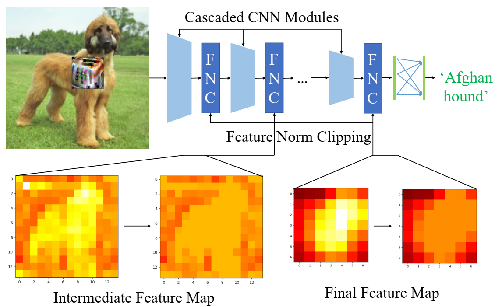

Information
- Title: Defending Against Universal Adversarial Patches by Clipping Feature Norms
- Author: Cheng Yu, Jiansheng Chen, Youze Xue, Yuyang Liu, Weitao Wan, Jiayu Bao, Huimin Ma
- Institution:
- Department of Electronic Engineering, Tsinghua University, China
- Beijing National Research Center for Information Science and Technology, China
- University of Science and Technology Beijing, China
- Year: 2021
- Journal: ICCV
- Source: Open access，Supplemental(注：开源代码在补充材料中 (゜▽゜*) ), IEEE
- Cite: Cheng Yu, Jiansheng Chen, Youze Xue, Yuyang Liu, Weitao Wan, Jiayu Bao, Huimin Ma; Proceedings of the IEEE/CVF International Conference on Computer Vision (ICCV), 2021, pp. 16434-16442
- Idea: 从实验和数学推导证明了对抗补丁会导致特征范数变大并提出了特征范数裁剪的方法来防御对抗补丁攻击
1 | @InProceedings{Yu_2021_ICCV, |
Abstract
针对通用对抗补丁(universal adversarial patches) 作者从实验和数学两方面说明了通用对抗补丁通常会导致常见CNN计算的深度特征向量的范数非常大，据此作者提出了一种简单有效的防御方法 FNC (Feature norm clipping)。
Introduction
所谓通用对抗补丁就是一种局部的特殊图案，无论原始图片是什么，无论对抗块放置在图片的什么地方，都能对网络产生误导（原文[1]称这是利用了一般神经网络在有很多不同对象的分类任务中通常只会给出最显著的那个，即对抗补丁是一种“很强”的目标使其掩盖了原有图像中的分类目标）。在这篇文章中，作者从数学上指出了通用对抗补丁为什么具备这样的性质。实验中发现通用对抗补丁在前向传播的时候通常会导致局部空间特征向量的范数显著大于其他特征向量。在CNN常用的全局平均池化下，通常大范数的特征向量会在最终结果中起到决定性作用。这种现象通常只在对抗补丁这样局部对抗扰动中存在，这导致 CNN 的有效感受野大大缩小。另一方面，其他部分的特征并不受影响，这也要求对抗补丁具备大的特征范数。
这篇文章的贡献如下：
- 分析了通用对抗补丁对深度特征表示的影响，数学上阐明了局部补丁区域存在大范数的现象
- 提出了简单有效的方法 FNC 通过限制产生大的特征范数来削弱通用对抗补丁参数的影响
- 效果很好
Method
先给出一些必要的简单定义：
补丁对抗样本 $\hat{\mathbf{x} }$ 由原始样本 $\tilde{\mathbf{x} }$ 通过以下公式生成 $$ \hat{\mathbf{x} }=(\mathbf{1}-\mathbf{M}) \odot \tilde{\mathbf{x} }+\mathbf{M} \odot A(p, t) $$ 其中 ⊙ 表示哈达玛积(Hadamard product，其实就是矩阵对应位置相乘)，M ∈ {0, 1}H × W × C 是补丁位置的二进制掩码，A(p, t) 是将补丁 p 做一个几何变换 t 并放置到 M 所指示的位置，其优化过程如下式所示 $$ \max _p \mathbb{E}_{\tilde{\mathbf{x} } \sim X, t \sim T} \log \operatorname{Pr}(\hat{y} \mid \hat{\mathbf{x} }) $$ 即最大化分类损失，使得模型分类错误。
接下来根据有效感受野理论推导对抗补丁产生大特征范数的原因：
所谓有效感受野(ERF)的定义是每个输入的点能影响输出的范围，具体而言，通过计算偏导数 ∂y0, 0/∂xi, j 的期望得到。ERF理论指出 ERF 的概率密度函数收敛到 2 维高斯分布 ΦN，其中 Ωn 是由卷积层权重分布决定的随机变量： $$ \Phi_N \sim \mathcal{N}\left(0, \sum_{n=1}^N \operatorname{Var}\left[\Omega_n\right]\right) $$ 当然这只是理论上的，实际上感受野是远远比理论要小很多的，但确实符合二维高斯分布函数即由中心向外围递减。
假设用一个函数 f : ℝH × W × C → ℝh × w × c 表示计算最后一层特征(final feature map, FFM)得到的输入感受野，用 fi, j, k(x) 表示 i, j 位置第 k 通道的感受野，考虑 $L=\{\hat{\mathbf{x} } + \gamma (\hat{\mathbf{x} } - \tilde{\mathbf{x} })\}, \gamma : 0 \rightarrow 1$ 路径而推导到第二行的公式 $$ \begin{aligned} &f_{i, j, k}(\hat{\mathbf{x} })-f_{i, j, k}(\tilde{\mathbf{x} })=\int_L \nabla_{\mathbf{x} } f_{i, j, k} \cdot d \mathbf{x} \\ &=\left(\int_0^1 \nabla_{\tilde{\mathbf{x} }+\gamma(\hat{\mathbf{x} }-\tilde{\mathbf{x} })} f_{i, j, k} d \gamma\right) \cdot(\hat{\mathbf{x} }-\tilde{\mathbf{x} }) \\ &=\mathbb{E}_{\gamma \sim \mathcal{U}(0,1)}\left[\nabla_{\tilde{\mathbf{x} }+\gamma(\hat{\mathbf{x} }-\tilde{\mathbf{x} })} f_{i, j, k}\right] \cdot(\hat{\mathbf{x} }-\tilde{\mathbf{x} }) \end{aligned} $$ 注意到 ERF 是输出 (0, 0) 的梯度图的期望，因此最后的期望项近似与 tri, j(ERF) ， 而迹也是 (i, j) 的转置。因此有 $$ \begin{aligned} \left\|\mathbf{f}_{i, j}^*\right\| & \approx\left(c\left(\operatorname{tr}_{i, j}(\mathrm{ERF}) \cdot(\hat{\mathbf{x} }-\tilde{\mathbf{x} })\right)^2\right)^{\frac{1}{2} } \\ & \propto \sum t r_{i, j}(\mathrm{ERF}) \odot(\hat{\mathbf{x} }-\tilde{\mathbf{x} }) . \end{aligned} $$ 其中 $\mathbf{f}^*_{(i, j)} = \mathbf{f}_{i, j}(\hat{\mathbf{x} }) - \mathbf{f}_{i, j}(\tilde{\mathbf{x} })$, 而 $(\hat{\mathbf{x} }-\tilde{\mathbf{x} })$ 在除了补丁区域外的地方为 0, 从 ERF 的性质，我们能得到 ∑tri, j(ERF) 是以 (i, j) 为中心的高斯函数在有限区域的加权和。可以证明 ∥fi, j*∥ 在空间上分布为具有相同方差但中心不同的高斯函数的加权和。因此，它具有与高斯函数相同的平方指数衰减率。由于补丁远小于图像，因此 ∥fi, j*∥ 在图像中也具有这样的平方指数中心属性。
然后我们考虑分类器层，因为最后的特征是 FFM 通过全局平均池化后送入全连接层的，所以最终分类概率为 $$ \mathcal{F}(y \mid \hat{\mathbf{x} })=\frac{1}{h w} \sum_{i, j}\left(\tilde{\mathbf{f} }_{i, j}^{\top} \mathbf{w}_y+\mathbf{f}_{i, j}^*{ }^{\top} \mathbf{w}_y\right)+b_y $$ 对于通用对抗补丁，$\mathcal{F}(\hat y \mid \hat{\mathbf{x} }) > \mathcal{F}(\tilde y \mid \hat{\mathbf{x} })$. 进一步假设 ∥wŷ∥ ≤ ∥wỹ∥ ，因为原图像是操作分类到 ỹ 的，所以有 $\tilde{\mathbf{f} }_{i, j}^{\top} \mathbf{w}_\hat y / \tilde{\mathbf{f} }_{i, j}^{\top} \mathbf{w}_\tilde y \approx 0$, 因此成功的补丁可以用下式描述： $$ \begin{aligned} 0<& \mathcal{F}(\hat{y} \mid \hat{\mathbf{x} })-\mathcal{F}(\tilde{y} \mid \hat{\mathbf{x} }) \\ =& \frac{1}{h w} \sum_{i, j}\left(\tilde{\mathbf{f} }_{i, j}^{\top} \mathbf{w}_{\hat{y} }+\mathbf{f}_{i, j}^*{ }^{\top} \mathbf{w}_{\hat{y} }-\tilde{\mathbf{f} }_{i, j}^{\top} \mathbf{w}_{\tilde{y} }-\mathbf{f}_{i, j}^*{ }^{\top} \mathbf{w}_{\tilde{y} }\right)+b_{\hat{y} }-b_{\tilde{y} } \\ \approx & \frac{1}{h w} \sum_{i, j}\left(\mathbf{f}_{i, j}^*{ }^{\top} \mathbf{w}_{\hat{y} }-\tilde{\mathbf{f} }_{i, j}^{\top} \mathbf{w}_{\tilde{y} }-\mathbf{f}_{i, j}^* \mathbf{w}_{\tilde{y} }\right) \\ \leq & \frac{1}{h w} \sum_{i, j}\left\|\mathbf{w}_{\tilde{y} }\right\|\left(\left\|\mathbf{f}_{i, j}^*\right\|\left(\cos \left(\mathbf{f}_{i, j}^*, \mathbf{w}_{\hat{y} }\right)-\cos \left(\mathbf{f}_{i, j}^*, \mathbf{w}_{\tilde{y} }\right)\right)\right.\left.-\left\|\tilde{\mathbf{f} }_{i, j}\right\| \cos \left(\tilde{\mathbf{f} }_{i, j}, \mathbf{w}_{\tilde{y} }\right)\right) \end{aligned} $$ 最后我们设法估计 maxi, j∥fi, j*∥/meani, j∥f̃i, j∥. 直观上看 相比于 ∥f̃i, j∥ 来说 ∥fi, j*∥ 显然更中心且衰减得更快，这是受 cos 相似度的限制,所以他们的比例显然更大，这导致了在补丁区域的 f(x̂) 具有更大的范数。假设 wŷ 与 wỹ 正交，这在 CNN 中近似成立 （这个有点迷惑，为什么能近似成立）。在数学上，边界由余弦相似度 $\cos (\tilde{\mathbf f}_{i, j}, \mathbf W_{\tilde y})$ 和 (cos (fi, j*, wŷ) − cos (fi, j*, wỹ)) 决定，其分别表示模型训练和补丁生成过程的饱和状态。这里假设二者充分训练后可以达到理论上界 1 和 $\sqrt 2$，这两个过程中通常都无法达到极限，但基于极限的比值得到的估计界限与实验结果非常吻合，因此上式可以进一步推得 $$ \begin{aligned} 0 &<\frac{1}{h w} \sum_{i, j}\left\|\mathbf{w}_{\tilde{y} }\right\|\left(\sqrt{2}\left\|\mathbf{f}_{i, j}^*\right\|-\left\|\tilde{\mathbf{f} }_{i, j}\right\|\right), \\ \left\|\mathbf{f}_{i, j}^*\right\| &=\max _{i, j}\left\|\mathbf{f}_{i, j}^*\right\| \frac{\sum t r_{i, j}(\mathrm{ERF}) \odot(\hat{\mathbf{x} }-\tilde{\mathbf{x} })}{\max _{i, j} \sum \operatorname{tr}_{i, j}(\mathrm{ERF}) \odot(\hat{\mathbf{x} }-\tilde{\mathbf{x} })} \end{aligned} $$ 最后就能得到预估的下界 $$ \frac{\max _{i, j}\left\|\mathbf{f}_{i, j}^*\right\|}{\operatorname{mean}_{i, j}\left\|\tilde{\mathbf{f} }_{i, j}\right\|}>\frac{h w}{\sqrt{2} } \frac{\max _{i, j} \sum t r_{i, j}(\mathrm{ERF}) \odot(\hat{\mathbf{x} }-\tilde{\mathbf{x} })}{\sum_{i, j} \sum t r_{i, j}(\mathrm{ERF}) \odot(\hat{\mathbf{x} }-\tilde{\mathbf{x} })} $$ 记 ℛ = maxi, j∥fi, j*∥/meani, j∥f̃i, j∥ 为特征范数增量比(Incremental Feature Norm Ratio, IFNR)，其最大值通常在补丁中心。其下界由上式给出并由下图的世界结果验证：
同样的结果可以推广到中间的特征，具体可以看原文，这里就不再推导了，下面表格是 ResNet-50 中间层特征的 ℛ 的均值
| Layer | Conv2-3 | Conv3-4 | Conv4-6 | Conv5-3 |
|---|---|---|---|---|
| Ratio | 1.05 | 1.80 | 2.98 | 3.39 |
上图展示了对抗补丁使得 ℛ 以补丁为中心增大且随着模型的深度累计。
Detail
根据上述分析，作者提出 FNC 来约束不同层的特征范数来使模型具备防御对抗补丁攻击的能力。
假设有级联卷积神经网络 {D(n)}n = 1N 和特征图 {f(n) ∈ ℝh(n) × w(n) × c(n)} 其中 N 表示级联模块数量。前向传播可以表示为 $$ \begin{aligned} &\mathbf{f}^{(1)}=D^{(1)}(\mathbf{x}), \quad \mathbf{f}(\mathbf{x})=\mathbf{f}^{(N)} \\ &\mathbf{f}^{(n+1)}=D^{(n+1)}\left(\mathbf{f}^{(n)}\right) \text { for } n=1,2, \ldots, N-1 \end{aligned} $$ 对 f(n) 应用 FNC 的计算方法如下所示，其中 α 是裁剪参数，随后将 g(n) 传入下一个 CNN 模块中计算 f(n + 1) $$ \begin{aligned} \mathbf{g}_{i, j}^{(n)} &=\frac{\mathbf{f}_{i, j}^{(n)} }{\left\|\mathbf{f}_{i, j}^{(n)}\right\|} \min \left(\left\|\mathbf{f}_{i, j}^{(n)}\right\|, \alpha \overline{\| \mathbf{f}^{(n)} \|}\right), \\ \left\|\mathbf{f}^{(n)}\right\| &=\frac{1}{h^{(n)} w^{(n)} } \sum_{i, j}\left\|\mathbf{f}_{i, j}^{(n)}\right\|, \end{aligned} $$ 
因此 FNC 通过梯度裁剪避免网络生成具有过大范数的特征向量，以此削弱对抗补丁的影响，接下来使用 ERF 理论分析 FNC 的精确影响。
特征向量的雅克比矩阵如下式所示，其中 $\frac{\alpha \overline{\left\|\mathbf{f}^{(n)}\right\|} }{\left\|\mathbf{f}_{i, j}^{(n)}\right\|}$ 是小于 1 的，(I − Pi, j(n)) 是 fi, j(n) 在正交方向的投影矩阵，因此之后梯度的范数不会增加 。 $$ \begin{array}{l} \frac{\partial \mathbf{g}_{i, j}^{(n)} }{\partial \mathbf{f}_{i, j}^{(n)} }=\frac{\alpha \overline{\left\|\mathbf{f}^{(n)}\right\|} }{\left\|\mathbf{f}_{i, j}^{(n)}\right\|}\left(\mathbf{I}-\mathbf{P}_{i, j}^{(n)}\right)+\varepsilon_{i, j, i, j}^{(n)}, \frac{\partial \mathbf{g}_{i, j}^{(n)} }{\partial \mathbf{f}_{i^{\prime}, j^{\prime} }^{(n)} }=\varepsilon_{i, j, i^{\prime}, j^{\prime} }^{(n)} \\ \mathbf{P}_{i, j}^{(n)}=\frac{\mathbf{f}_{i, j}^{(n)} \mathbf{f}_{i, j}^{(n)^{T} } }{\left\|\mathbf{f}_{i, j}^{(n)}\right\|^{2} }, \varepsilon_{i, j, i^{\prime}, j^{\prime} }^{(n)}=\frac{\alpha}{h^{(n)} w^{(n)} } \frac{\mathbf{f}_{i, j}^{(n)} \mathbf{f}_{i^{\prime}, j^{\prime} }^{(n)} }{\left\|\mathbf{f}_{i, j}^{(n)}\right\|\left\|\mathbf{f}_{i^{\prime}, j^{\prime} }^{(n)}\right\|} \approx \mathbf{0} \end{array} $$ 最后的结果就是被裁剪的范数至少会进行比例为 $\frac{\alpha \overline{\left\|\mathbf{f}^{(n)}\right\|} }{\left\|\mathbf{f}_{i, j}^{(n)}\right\|}$ 的缩放，这意味着补丁对应区域的大范数特征向量会被 FNC 裁剪，梯度范数会缩小，导致如图 4 所示的补丁区域的位置明显比原来要暗得多。
Experiment
- 模型：ResNet-50, Inception-V3, MobileNet-V2, ResNet-110
- 对抗补丁生成方法：AdvP, LaVAN
- FNC模块位置：每个级联模块（即残差块、inception 块、反残差块）
- 对比的一些防御方法：Digital Watermarking(DW), Local Gradient Smoothing(LGS), PatchGuard, Defense against Occlusion Attacks(DOA)
- 结果：都很不错，就不展示了，有兴趣可以看原文
Conclusion
这篇文章提出了通用对抗补丁会导致补丁区域具有大的特征范数的问题，并给出了数学解释，随后针对这一特点提出了 FNC 的对抗防御方法，这种方法开销不大，对原始模型的性能影响也很小，很容易与其他方法进行结合，效果很不错。
Others
结果复现
因为 ImageNet 太大了，所以将代码修改了一下丢到 CIFAR10 上跑，其余参数不变，结果如下
| 方法 | 准确率 |
|---|---|
| baseline(clean) | 78.87 |
| Adversarial Patch attack | 69.98 |
| LaVAN attack | 70.82 |
代码分析
基本代码是这样的，当然原代码中还有一些变体
1 | def clamp(self, x, a=1.0): |
其实也很好理解，就是先将特征的范数计算出来进行归一化操作，随后将范数进行裁剪后再变换回去，而裁剪的上限是范数的均值
References
如果对你有帮助的话，请给我点个赞吧~
欢迎前往 我的博客 查看更多笔记